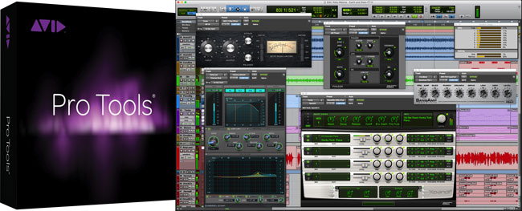
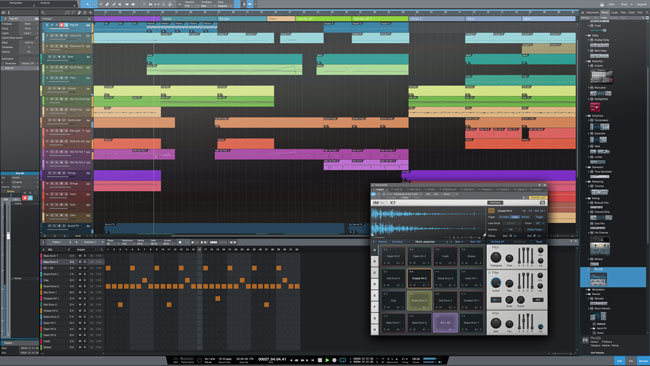
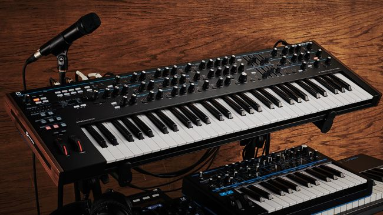
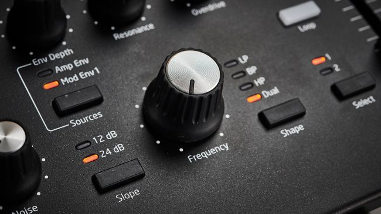

EQUIPMENT
Check out the best music equipment for you below:
Microphones:
Shure SM57

Rode NT1A

AKG 6414 XLS

Recording Softwares:
Avid Pro Tools

Pro Sonus Studio One 4.5 Artist

Keyboards:
Moog Matriarch

Novation Summit
